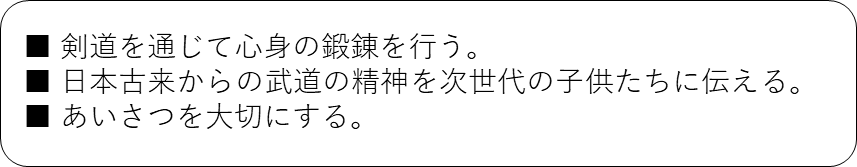

青木島剣道少年団の紹介
概要
長野県長野市更北地区で活動している
社会体育の剣道教室です。
沿革
1990年 設立
2009年 創立20周年
2019年 創立30周年
活動方針

団員数
未就学児：0名
小学1年：5名
小学2年：2名
小学3年：3名
小学4年：9名
小学5年：8名
小学6年：2名
青木島小、三本柳小、真島小、下氷鉋小、篠ノ井東小など
中学生：11名
更北中、広徳中、犀陵中など
青年部：9名
※2024年1月1日現在
指導者
| 団長 | 黒柳博子 | 五段 | |
| 師範 | 常田政邦 | 教士七段 | 全日本剣道連盟 社会体育初級指導員 |
| 指導員 | 小山秀弥 | 七段 | 全日本剣道連盟 社会体育初級指導員 |
| 小松甲征 | 四段 | |
| 田子博和 | 三段 | 全日本剣道連盟 社会体育初級指導員 |
| 清水翔平 | 三段 | |
| 和田八束 | 二段 | |
| 水野晃汰 | 二段 | |
ホームへ
入団案内
中学校部活動の地域移行
青年部